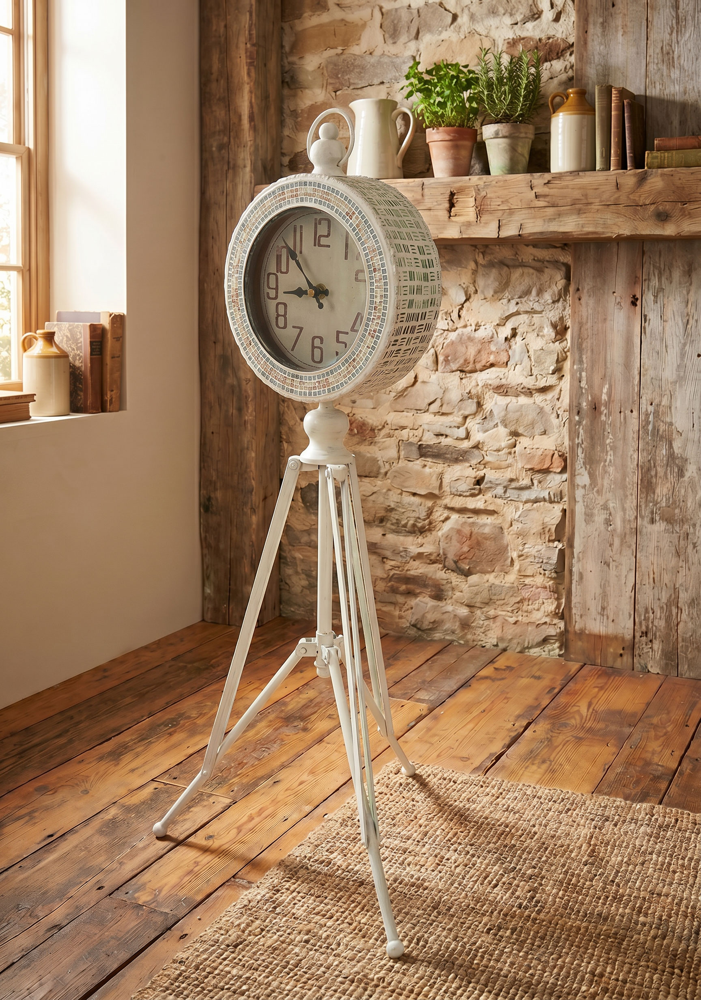
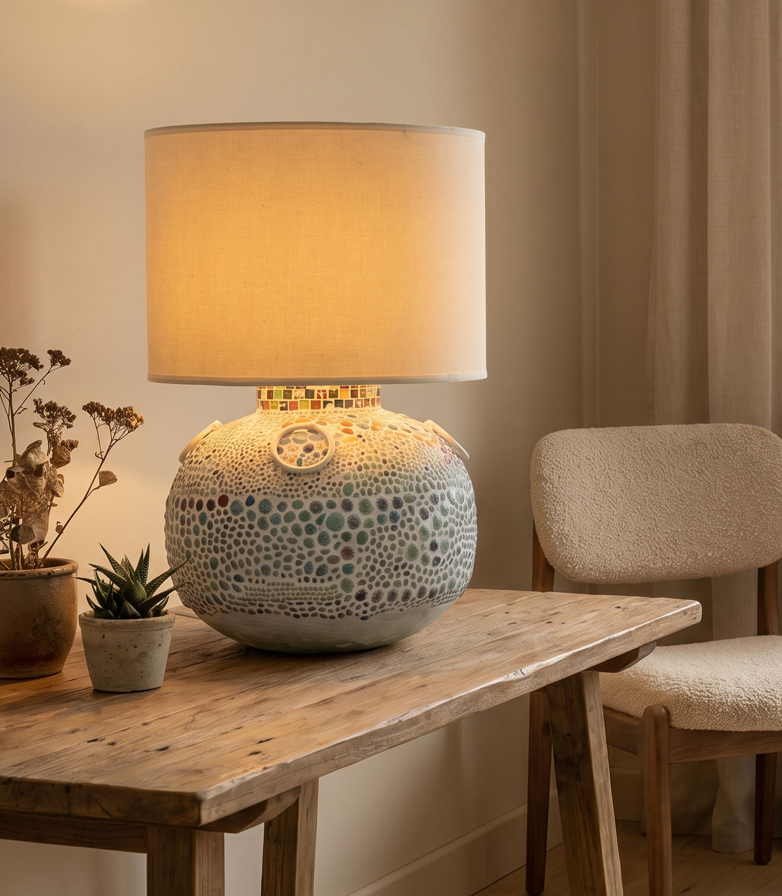
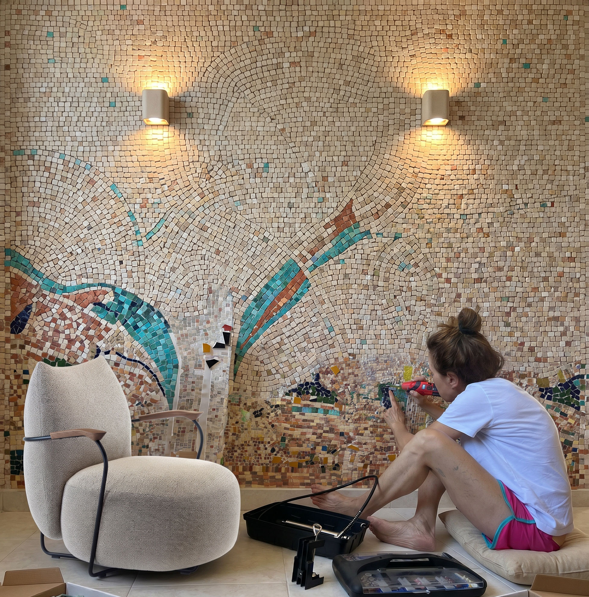

מכונת זינגר מחודשת
פריט נוסטלגי עם חיים חדשים.
פריטים, עבודות חומר ואומנות שנוצרים במיוחד לבית, למשרד ולעסק.
פריטים, עבודות חומר ואומנות שנוצרים במיוחד לבית, למשרד ולעסק.
לפעמים דווקא הפריט הכי נכון לחלל הוא זה שלא הגיע מקטלוג, אלא נוצר במיוחד עבורו.
כחלק מהשפה העיצובית שלי אני משלבת חידוש רהיטים, עבודות חומר, אומנות ופריטים בהתאמה אישית לבתים ולעסקים.
יש רהיטים שלא חייבים להיפרד מהם. לפעמים מספיק לזהות את הפוטנציאל ולתת להם חיים חדשים.
מכונת תפירה של זינגר שעברה מדור לדור עברה חידוש בפוליטורה לעץ כדי לשמר את האופי המקורי שלה.
פריט נוסטלגי עם חיים חדשים.

חידוש עדין ששומר על החומר והאופי.
שעונים, מנורות, פסיפס, קירות ופריטי חומר שנוצרים כחלק מהחלל עצמו.

פריט שימושי שהופך לאובייקט אומנותי.

שילוב של אור, חומר וטקסטורה.

עבודת חומר שמכניסה עומק ואופי לחלל.
שולחנות, פרטי חומר ואלמנטים שמחברים בין פונקציונליות לעיצוב.

שילוב בין רוך, חומר ונוכחות בחלל.

פריט צבעוני שנוצר במיוחד לחלל עבודה.
הפרטים הקטנים שיוצרים את התחושה בחלל.
כשהיא מדויקת, היא נותנת לבית או לעסק את מה שאי אפשר לקנות מוכן: אופי.